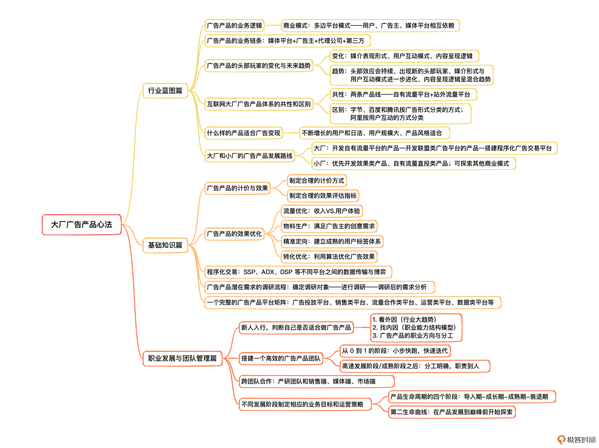
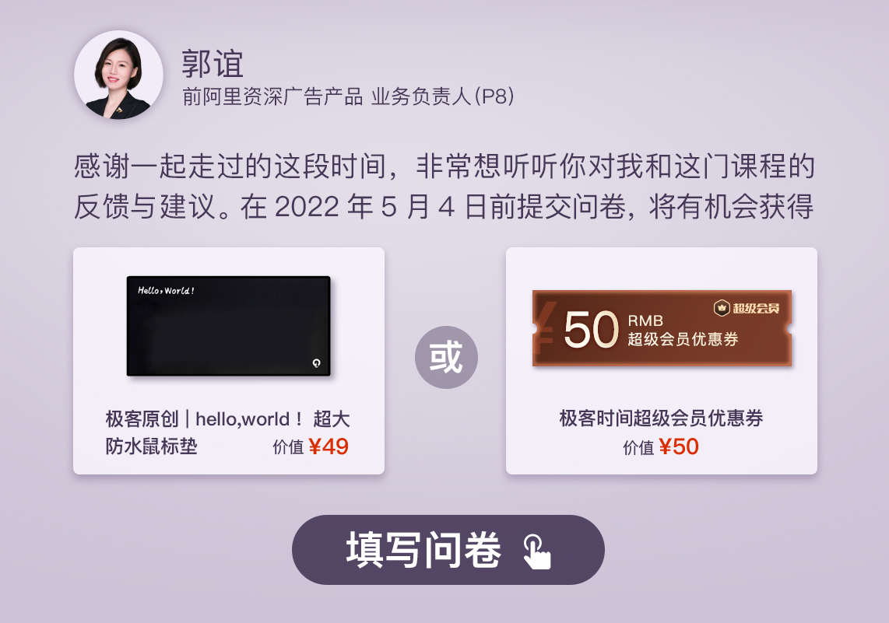

- 00 开篇词 作为一名互联网人，你为什么必须了解广告产品？.md.html
- 01 业务逻辑：广告产品的前世今生和商业模式是怎样的？.md.html
- 02 业务链条：广告主、媒体、第三方等分别如何看待广告产品？.md.html
- 03 头部玩家：从BAT到跳动的字节，广告产品有哪些变化与发展趋势？.md.html
- 04 产品体系：互联网大厂的广告产品存在哪些共性和区别？.md.html
- 05 变现模式：什么样的产品适合采用广告模式变现？.md.html
- 06 产品路线：大厂和小厂的广告产品发展路线有什么区别？.md.html
- 07 计价与效果（上）：如何制定合理的计价方式？.md.html
- 08 计价与效果（下）：如何制定合理的效果评估指标？.md.html
- 09 效果优化：如何一步步从提升曝光量深入到提升销量？.md.html
- 10 流量优化：如何兼顾广告收入和用户体验？.md.html
- 11 物料生产：如何满足广告主的创意需求？.md.html
- 12 精准定向：如何建立一个成熟的用户标签体系？.md.html
- 13 转化优化：互联网大厂如何利用算法优化广告效果？.md.html
- 14 程序化交易：程序化交易是否可以提升广告效果？.md.html
- 15 需求调研：广告产品潜在需求的调研流程是怎样的？.md.html
- 16 平台建设：如何从0到1建立一个完整的广告产品平台？.md.html
- 17 职业发展：新人入行，如何判断自己是否适合做广告产品？.md.html
- 18 团队建设：如何搭建一个高效的广告产品团队？.md.html
- 19 跨团队合作：产研团队和销售端、媒体端、市场端如何合作？.md.html
- 20 产品运营：不同发展阶段如何制定业务目标和运营策略？.md.html
- 21 广告产品彩蛋：课程答疑与推荐书目.md.html
- 结束语 你想要成为什么样的互联网广告产品人？.md.html
- 捐赠
结束语 你想要成为什么样的互联网广告产品人？
你好，我是郭谊。历经两个多月，我们终于来到了专栏的“最后一课”。
首先，感谢你耐心地看完了这个专栏的全部内容。让我们一起来回顾一下走过的路：

看到自己学了这么多内容，是不是得给自己先点个赞？回顾专栏一路走来的这21个主题和里面包含的诸多知识点，我的心中同样也非常感慨，我终于做成了自己一直以来想要完成的事情。
我为什么要写这个专栏？
10年前，我在百度负责富媒体广告网络产品相关工作时，白天上班时和合作的同事天天讨论资源预估如何做，新的广告产品怎么才能卖得更好，夜里还对着电脑抓耳挠腮地分析非标产品和标准产品之间的关系是什么，为什么公司不做CPC固定价格的广告产品……我们还把合约广告和竞价广告之间的展现优先级逻辑戏称为“人狗共浴”。
记得当时我说：“未来总有一天，我要把咱们做广告产品的这些小故事都写出来。”
这就是我写专栏的第一个初衷——让我和团队的同事们共同奋斗过的东西留下一些痕迹。虽然我们都各奔东西了，但我们经历了生活与职场的考验之后，对彼此有了更多的理解，成为了要好的朋友。我想，我应该把我和他们在工作中讨论甚至激烈辩论之后沉淀下来的认识，以及我们共同经历的一些故事写出来。其实，在专栏那些理性的案例分析里，蕴含着我们的青春、我们的汗水、受挫的苦恼、突破的喜悦……
做这件事情的第二个初衷是为了回馈这个行业，它给了我很多光荣与梦想。在互联网广告产品行业的这十年，我付出了很多，但我得到的更多。期间，我把BAT三家刷了一圈半，所以朋友们有时候会戏称我为Bat Woman（蝙蝠女侠）。我也有幸见证了这些头部玩家把PC互联网的辉煌延续到移动互联网时代的过程，在这个过程中，我们也不断面临新的挑战，并在挑战中成长了起来，获得了很多成功的经验和失败的教训。所以，我希望把这十年从广告产品中获得的东西，以这种方式分享给你。
如果你是我的同行，希望这个专栏可以帮助你建立你自己的广告产品知识体系；如果你是对这个行业感兴趣的朋友或者年轻的新锐，希望这个专栏可以帮助你少走弯路，直达真相。
最后，还有一个原因，就是有了极客时间整个团队的支持。其实这个广告产品专栏甚至出书计划，在两三年前就已经提上日程，但或许是时机未到，今天才终于在极客时间团队的支持下和你见面。专栏写作期间，从外部大环境到我的个人生活，都正好面临着严峻的考验。当我敲下这行字时，正是凌晨4点41分，黎明前最黑暗的时刻。
不仅仅是“学”，而是真正“用”起来
我希望你学习这个专栏的时候，不仅仅是学，而是要真正用起来。以前在学习冥想的时候，老师说，冥想和体育锻炼一样，是锻炼我们每个人的“心”，必须要每天练习。如果不去实践，那么冥想课程只会成为我们这些学员人生中一段美好的回忆，而不能真正帮助我们更好地面对人生的挑战，解决生活中的问题。
或许你已经在探索广告产品或者商业化的路上了，或许你刚刚想要进入广告产品这个行业，或许你想给自己现在的工作或者业余生活增加更多的启发……无论你学习这个专栏的原因是什么，怎样才能不至于让这次相遇只是变成你生命中一段美好的回忆，而是真正让你能够用到、用好呢？
根据国外的研究，阅读平均的知识留存率只有10%，边看边听的留存率会高一些，但也不过是20%。虽然我在每一讲中都尽量放入真实的大厂或者知名企业的案例进行分析，尽量让你向演示的知识留存率（30%）靠拢。但真正能够让你理解与记住的，是积极地在评论区或者学习群中发言、交流与讨论，然后把你所能理解的专栏知识点应用在你的实际工作或求职中。而知识留存率转化最高的，其实是像我写这个专栏一样，把从这个专栏中学到的东西，通过你自己的语言和示范，教会其他人。

希望你可以把你印象最深的知识点和技能用起来。就像我在上一讲中推荐过的曼昆的《经济学原理》，实际上真正给我留下深刻印象并经常被我运用的，就是供需模型。相信你在本专栏中已经多次体验到我是如何运用供需模型分析问题并得出结论的了。
广告产品人必须不断思考的三个本质性问题
其实，作为资深的广告产品人，并非所有的问题，我都找到了可以被自己所接受，也可以用来说服内部团队和外部客户的答案。实际上，有很多问题，我依然在思考，在不断地推翻，不断地重构我给出的回答。下面，我就来分享一下这些年我一直在思考的三个问题。
第一个问题：广告产品的流量与效果的天花板
为了优化广告的效果，我们运用了流量优化、物料创意优化、精准定向、转化优化等众多策略，但广告产品的流量与效果都是有天花板的。而且，随着外部环境的变化，我们经常看到，一些成熟广告产品的流量增速在放缓甚至停滞不前了，而点击率随着用户对新的广告产品样式的熟悉，会不可避免地产生审美疲劳，所以也可能会下降……
那么应该如何解决这个问题呢？我现在的答案是：虽然现在的广告产品依然是“流量为王”，但是流量规模已经不再是唯一的重要因素了。像我第9讲“效果优化”中所提到的，头部大厂都在逐步深入广告点击后的着陆页甚至全链路的效果优化，力图能够打造一个让用户和广告主都满意的生态体系。
第二个问题：广告变现与用户体验之间的矛盾
在前端广告样式简单粗暴的时候，广告变现和用户体验之间存在矛盾。例如“弹窗广告之父”森·朱克曼（Ethan Zuckerman）近年来就发表过后悔发明弹窗广告的言论。
在广告越来越原生，软性植入越来越接近内容的时候，广告变现和用户体验之间是不是就不存在矛盾了呢？No。依然会有用户吐槽广告太像内容，误点击后体验很不好。还有的用户戏称“现在是广告中间插播内容”。还有朋友说未来如果车联网上出现了广告，他可能在车里都坐不住。
广告在变现的过程中，还是必须要重视用户体验的。否则，不仅会破坏用户基础，还会影响你的工作体验，我相信你也不想从事一个每天都在干扰他人的职业。这，是作为广告产品从业人员应该秉持的基本价值观。
除了秉持这个基本价值观之外，在日常工作中，我们作为专业人士，要设法运用技术来改善这一矛盾。例如，用户刚买了车之后就给用户推车的广告，这不是好的精准定向技术，好的精准定向技术不是盲目地给用户推荐他买过的商品，而是应该给他推荐他买了车后可能需要的商品。
第三个问题：广告产品与其他变现模式之间的矛盾
我是研究生期间去视频公司兼职，后来才进入互联网行业的。以我入行的互联网视频产品而言，早期主要采用的是UGC用户生成内容的途径，但因为版权方面的顾虑，无法使用广告模式大规模变现。等到后来爱优腾等长视频网站采用了PGC平台生成内容的方式，解决了这个问题，广告模式大行其道。
但是，广告收入无法填补长视频网站高昂的内容采购成本，所以爱优腾才纷纷推出自制剧、选秀等，降低内容成本，并且利用自制独播内容吸引用户购买免广告会员的增值服务。作为广告产品经理，增值服务的变现模式肯定会挤占广告变现模式的增长空间。但是，站在整个商业化的角度来看，这种混合变现的模式是把选择权交给了用户——你可以选择花钱不看广告，也可以选择看广告但是少花钱。
因此，如果你现在是或者今后有志于成为一个广告从业人员，希望你除了广告产品以外，也横向拓展一下自己的涉猎领域，去广泛地了解各种主流的商业模式和变现途径。这样，你才能找到广告产品与其他变现模式的微妙的平衡点。
广告产品人未来发展的三条路
聊到这里，如果你还在，我想你最关心的问题可能还有一个，就是“到哪儿去”的问题，也就是说广告产品人未来的发展道路。这里我给出了三条路。
第一条路：在大厂或者垂直赛道的独角兽公司中做管理人员。例如广告产品总监或者广告产品架构师，甚至产品VP或者CPO（首席产品官），负责广告产品及相关业务。因为产品经理岗位的技术性不如研发那么强，所以我建议广告产品经理不要追求纯纯的专家路线，至少在中国企业，是不存在的，我们应该追求不丢专业，一专多能的管理路线。
第二条路：出来创业，创业的项目和广告产品相关。你可以做广告代理公司、广告技术公司、营销咨询公司等，或者更彻底地，你自己做一个有流量的用户产品，然后运用你的广告产品专业能力来为这个用户产品做变现。
第三条路：转型做其他的业务。我的前辈、同行与后辈中，都不乏这样的例子。有的去做了车联网和自动驾驶，有的去做了智慧城市和智能家居，有的去做了互联网医疗大健康。我算是半只脚踏入了知识付费和在线教育领域吧。
你的职业生涯很长，很可能比你负责的广告产品，甚至你所在的公司的生命还要长。所以，和我在第20讲中所提到的产品生命周期和第二曲线模型一样，你也要把自己的职业发展看作是一个“产品”的生命周期，我们要明确现在自己所处的阶段，并在发展的道路上寻找潜在的第二曲线，保持敏锐，主动拥抱变化，寻求挑战。
不是告别，是新的起点
课程的结束，并不代表学习的结束，希望你能保持一颗热情、好奇的心，对学习、知识保持“饥饿感”，尽可能地从知识和实践中汲取营养，提升自己，跟上这个行业更迭变迁的速度，一起迎接广告产品下一次大的跃迁与进化。最后，让我们一起通过广告产品来见证这个时代进步吧！
虽然这个专栏的正文部分到此就告一段落了，但是我对广告产品行业的反哺尚未结束。我会继续关注这个专栏里你的每一次评论与每一个问题。所以欢迎你继续在本专栏的评论区提出你的问题，我会尽我最大能力为你提供解答和参考。也欢迎你加入本专栏的学习群，和更多同行还有我一起关注与探讨广告产品的最新动态。
为了让专栏的内容越来越好，我准备了一份结课问卷，希望你能用两分钟的时间填写一下，非常期待你对这个专栏的意见或建议，专栏质量的提升离不开你的努力。
感谢你的关注，让我们一起携手前行！- 
© 2019 - 2023 Liangliang Lee. Powered by gin and hexo-theme-book.